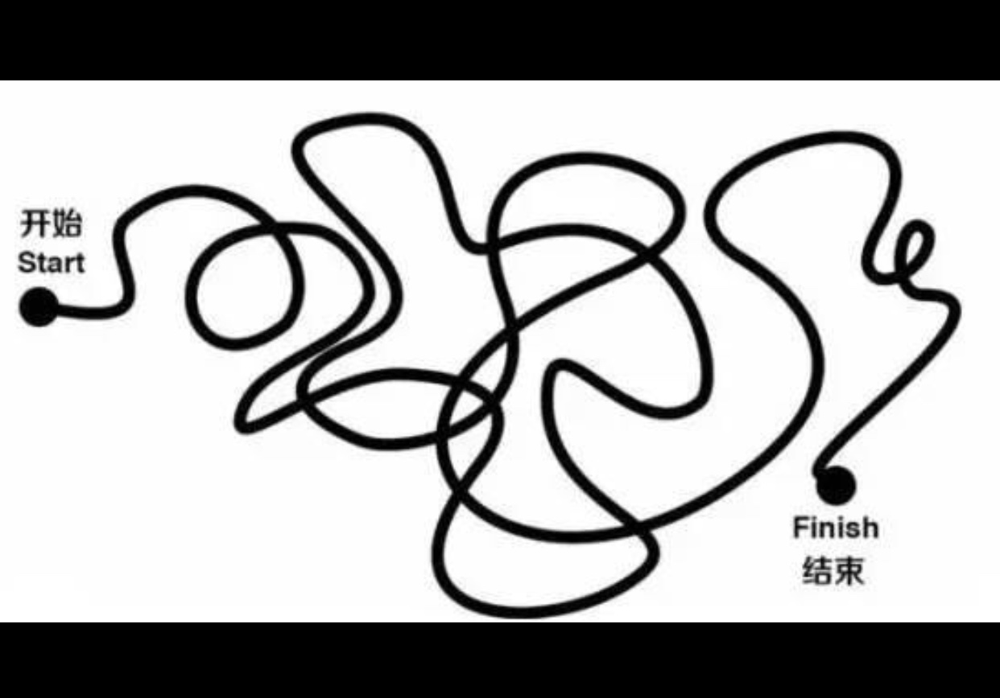

说在前面
最近自己工作上的项目也进入了以用户增长为目标的阶段，纯粹产品上的打磨相对少很多，以“提升产品用户增长”说白了就是提升产品流量，建立品牌认知。
更多地是要在产品运营上用力，就我个人来说，觉得在这个方面自己现在有这些问题：
- 不知道该如何正确理解“用户增长”
- 对实现提升“用户增长”的运营方式不了解
- 工作肯定需要跟运营和必不可分的合作，现在对运营的基本流程不够清晰
- 缺乏对进入期和成长期产品运营的全局思考和攻略
看书对我而言，是挺有用的一个办法，基于以上的问题，我选择了一批书，做职业技能拓展主题阅读。
以下是我看《运营之光2.0》的笔记和个人操作指南。
简单介绍一下作者：
黄有璨，现任互联网人在线学习社区三节课（sanjieke.cn）联合创始人。其他标签就不多说了，百度也能知道。运营的本事，不从那些职业头衔来看，也是杠杠的，为什么呢？就冲他写的文章以及这本书，给他的产品和合作平台品牌带来多少曝光和知名度，就不可否认了。
正文开始
书中判断“互联网以后是运营驱动的时代”，与之前盛行的“内容为王”差不多，其实互联网所有的工种在不同公司都是各自的驱动，并非时代所驱。如果真要说起来，那以后应该是“全才驱动的时代”，既：要会产出创意做产品，又要会运营养产品，还得学会品牌营销推销产品，而且要具备大视野的战略思维。
说白了，哪个时代不是这样啊？单一工种度过了它的黄金时代，到了任何一个产业成长期，需要的就不仅仅是单一工种的技能。所要做的，不外乎各自终身学习，不断往身上添加新技能和buff。
黄有璨整本书是按层次递进的，从思维方式再到运营技巧手段，从内到外分享经验。
在底层方法论这两章，都是职场普适的方法论，已经不局限于仅运营可用。
虽然都不新鲜了，但书中实例很多，算是比较用心地在分享经验。
我觉得在解决我自己工作项目那些个具体问题上，先了解一下他人对于思维方式上的想法，也是不错的入手点。毕竟，技巧永远在思维意识之后，否则容易“走火入魔”。
这篇文主要说3个意识、4个底层思维、3个方法论。
简称343。嗯，挺没诚意的一个简称，但内容绝对掏心掏肺，可能有些啰嗦，写的过程中穿插我个人很多理解，但保证货真价值。毕竟是我自己的“弹药库”，用自己的理解来讲述才是真的吸收，也有些地方写着写着觉得挺逗的。
3个意识
目标导向意识
职场上工作分两种：纯粹的只能支持类工作，和目标导向类工作。
职场上有两种人：一种是可被替代，一个是创造独特的竞争力。
在很多职场技能书中应该都看到过类似的案例：
小王和小李是个办公室助理，他们都是做一些他们认为是“打杂”的活，比如复印文件、统计数据、写会议报告等等，小王就是重复一天又一天做这些工作，有一天以太累了没收获为理由辞职了，小李也是重复这些工作，但从复印文件里整理出了部门最近的项目名目，和流程大纲，分析猜出最近部门的业务目标；从统计数据里发现一个可以改进的项目问题；从会议报告里看部门各个前辈的方案、最近的行动，学习到如何解决问题。最后通过数据发现项目问题，提出了可行的方案，执行后得到一个较好的结果，同比起同期的同事，小李的表现简直不能再赞了。
例子是假的，过程当然没有例子讲的这么短，不过真的有这样的人存在，用处处以目标为导向的意识在处理自己的工作和生活。
在我看来，培养这种意识的方法就是：
在日常的工作中，练习这种无形的能力，随时随地刻意让自己多想一些，多问自己“这件事还可以怎么做更好”的问题。
效率意识
关键在于：投入产出比。
经常将“如何在相同的成本下，让自己能产出更多的价值”记在脑中。
这不止运营需要，做产品、甚至其他职业，都是通用的。不说用最小的成本，就说在相同成本下，如何让自己一次比一次产出变得更大，这就是你的价值所在。
看到这个，我觉得有个误区，就是——“我必须要用多小多小的成本，做出多大多大的事儿，就是牛逼，才算成功”。
其实并不是啊，像《终身成长》里说的，成长型思维认为，每个人的成就都不是一蹴而就，只要每一次比上一次产出更多，就是在成长。
这个思维也能用在项目评估上，不管项目结果如何，拥有效率意识，不会只看最终的结果表面，而是从其中去寻找机会和总结经验。对于不尽人意的项目效果更佳，比如这个失败项目的经验，对你而言有价值的地方在于：过程中是如何思考控制投入产出比例，你在其中做出了怎样的努力，为什么这个努力没有得到预期的效果，关键问题出在哪里，下一次你会有怎么样的行动去优化等等。
哦，突然觉得，以上思路也可以用来制作每次的晋升评审PPT演讲稿。
话说回来，成长的思维在于，通过一次次不停歇地努力，去修正自己的思维方式，让其变得越来越清晰、有逻辑。
说到这里，我延伸想到，所有意识都是一种思维方式的体现。书中作者给了两幅图，表示不同的意识：

关于如何拥有清晰的解决问题的思维方式，下面流程化思维一节讲的更详细。
信仰意识
书中作者说了一句话，我觉得可以当做运营或者产品的信念之花，这句话是：
“在互联网的世界里，有时只有抱着一种更加开放的心态，秉持着一种「先不论我可能会得到什么回报，让我先来基于我的理解把事情做到极致」的心态，你才有可能做到很多有趣的事情。”
现在我们会因为kpi、过程有预见的麻烦，而太有“功利性”，只做短期眼见可得利益的事情。其实要先把杂念抛一边，回归童年时心无杂念玩耍的心态，去当做一件无比热爱的玩具来玩耍。
书中举了一个例子，有一次两个运营朋友A和B发生了争执，起因就是因为A在未跟B沟通的情况下，在B运营维护的微信群里发广告。这时候A的想法是“你也在我群里，我发个宣传怎么了”，B的想法是“你都没先让我在你群里打广告，就来我群里宣传，凭什么”。
A就跟有些人一样，潜水不说话、一有事就话都不说往群里扔个投票链接求帮忙，多数时候惹人嫌。这种事情在我看来，就是中国人一有事儿烧香拜佛、事成了就还愿给佛造个金身，事儿不成就等下次再烧香拜佛。
B的想法也不怎么样。
我的感悟是：所有事情和关系都不是召之即来挥之即去的，都要花时间和金钱去培养。
这里两人都是一种 “只有……才……”的逻辑，即：
只有我得到了语气的某种回报之后，才会向你提供对应的服务。
但实际上，对于用户来说，刚好相反，用户是“既然……那么……”的逻辑，即：
既然你已经完成了某件让我认可的事情，那么我作为用户理应给予你肯定和回报。
嗯，其实两种逻辑都是一种底层支撑：利益。不过一个是从“我”的角度利益出发，一个是以“用户”角度利益出发。顾客是上帝，所以在产品和运营工作思考上，我们得以用户利益为先。
说回到刚才那个例子，广撒网到处发宣传文案或链接的运营A，既伤害了跟同行的关系，又不会从这种行为里获益。
为什么呢？
投放没有针对性，而且违背了投入产出比那个原则。
这种时候，正确做法应该怎么样呢？
一方面，像刚才说的所有事情和关系都是长期维护的，要了解你每一个参与的群“调性”和用户定位，不时刷刷存在感，搞搞互动，才不至于在做宣传的时候显得突兀；
另一方面，通过平日的功夫，拥有自己的“主战场”，培养出自己的“主力军”用户，需要的是针对性培养和投放政策，挑选适合的群和用户进行投放才最有效。
这里，我另外延伸一个话题——关于“以用户价值为中心”。
创造用户价值短期内不一定会有回报，比如需要花很多力气去做用户运营、拉新等等，而消费用户价值却能很快给产品带来收入，比如插一点广告收一些费等等。
前提是，唯有你创造的用户价值足够多，才经得起你消费。
这让我联想到一个问题：
互联网产品什么时候适合寻求商业化？
那就是当你的用户足够多，提供给用户的价值经得起每一次做商业化消耗的时候，或者说不间断地创造的用户价值大大超过每一次失去的用户的时候。
说到用户价值，还要再插一个关于产品与运营的关系：
“产品负责界定和提供长期用户价值，运营负责创造短期用户价值 + 协助产品完善长期价值”
互联网人都知道产品的生命周期可以简单归结为进入期、成长期、成熟期、饱和期、衰退期五个阶段，在不同的阶段使用的产品和运营策略都是不同的，具体的东西在本书后面几个章节有讲，现在先不多说。
运营和营销是很容易弄混的东西，很多时候我们常会第一时间想到树立品牌什么的，但在初期，用户并不知道产品存在的时候，连认知都没有，就别谈品牌了。
总结下来，就是在快速发展的互联网行业，基本都处在长期价值未明确的阶段，运营多做用户运营，包括促销等手段。而成熟的、已经有明确价值的公司，营销品牌的作用要更大些。
所以，可能我的项目，第一步就是多做一些能够创造短期用户价值的功能，跟运营打配合；同时去提供长期的用户价值，比如在这里找好产品的长期定位、独特性卖点等等。
4个底层思维
关于4个底层思维，大致就是这样的：
攒个局-描绘路线-找到最短的路-行动以下详细讲：
攒局——生态化思维
作者提出的4个底层思维，概念都特别抽象，为了好理解，我都用自己觉得挺接地气的方式去解读。
比如说到生态化思维，用作者在其他小节提到的一个概念来说：运营做事其实就是在攒局，
“即，设计或假想出来一个最终可以拉动 N 多人一起参与一起玩一起 High 的事情，并一步步去让这个事情从假想变得落地……无论局大局小，组局成功的关键，总是在于你要能够一一界定清楚，局内各方的价值供给关系，并在其中穿针引线，优先引入某种较为稀缺的价值，从而逐步让各方间的价值供给关系从最初的假想一点点变为确立。”
总结就是：界定供给关系-引入稀奇价值-建立关系
说的很清楚了，拉一堆人一起做一件事儿，而且作为组织者的你，要有大局观，对你所要做的事情心里门儿清，做好各种环节上的谋划。
最重要一点是，你这个局，很像组织一场贸易，本质上是利用价值交换，达成目标。将很多有不同价值的人拉到一起，提供一个机会，让他们进行交易，如果双方匹配度高，那这个局就很成功。
描绘路线——流程化思维
做事需要一定的逻辑，头脑里得有清晰的步骤。路要一步步走，而在走之前，至少得自己绘制一下路线，目的地在哪儿，从哪儿出发，路上会遇到什么，都是要在出发前想清楚的。
书中作者给出关于运营活动策划前的流程步骤建议是：
（1）界定清楚我想要的目标和结果；
（2）梳理清楚，这个问题从起始到结束的全流程是怎样的，会经历哪些主要的环节；
（3）在每一个环节上，我们可以做一些什么事情，给用户创造一些不同的体验，以有助于我们最终达成期望实现的结果。
包括，假如你做了一个活动效果不佳需要去具体分析它的原因，你应该先把整个用户参与这个活动的流程梳理出来，再从具体每一个环节的数据去看问题到底都出在哪些环节，而不是纯靠拍脑袋式地觉得「这个活动就是烂」。
其实，这就是要有一个解决问题的步骤，
《麦肯锡笔记思考法》中给出一个答案，分四步：
第一步，找出真正的问题，是那种本质上的问题；
第二步，建立假设，提出针对问题暂定的解决方法；
第三步，验证假设；
第四步，总结，并以此制定行动方案。
这是我见过的最简洁明了的解决问题流程，我之前写过这本书的书评——《一本被书名耽误的问题解决宝典》
找到最短的路——杠杆思维
在这过程中，最重要的是找到一个点，可以撬动整个局的杠杆，就能将局攒成功，又俗称“破局”。
找到最短的路，才能更快的到达终点。
有句话叫做：
“给我一个支点，我就能撬起整个地球”。
我越来越体会到这句话的含义。这不只是一个哲学命题，更是一个人生智慧。到处涉猎往往一事无成，做好最重要的一件事情，却能带你走向更宽阔的世界。
借用美国作家奥格·曼狄诺的一句名言：
“一次只做一件事的人，才会领先于这个世界。”
成功的秘诀就在于一件事。你是否能把这件事情做好，决定了你能够走多远。肯德基做好了一份食谱，成为了一家伟大的公司。乔布斯做好了一款手机，颠覆了这个时代的传播方式。
所以，做一件事情，首先要确定的，就是找到最重要的那件事。
怎么找到最重要的事呢？
简单来说就是用前一个思维，在分析解决问题的过程中，看到一件事，它是所有问题的来源，解决完这件事，一切都会迎刃而解。找到这个最“关键”的点之后，再寻找解决它的核心问题，一步步拆解目标，直至集中精力把这个点突破。
书中举了个例子，就是作者某一次要在短时间内组织一场高端人才线下招聘会/见面会。一没时间大量联系行业内的人，二没资金去做大规模推广，怎么做呢？
他找到关键事件是“拉3～5个大佬站台”，然后递进发现怎么才能拉大佬站台呢？核心点就在“告诉大佬，我们能提供给大佬招人的机会+提升大佬个人身份和行业影响力”，最后集中资源解决这个目标。于是通过请几个大佬站台，有了这一层宣传，加上圈子里互转，整个活动就盘活了。
很多时候，并不是说一个人的能力真的比其他人大多少，他的人脉有多广，而是他抓住了事情的关键，打蛇打七寸，他只需要集中精力去做好这一件事情，其他的东西，都是一环扣一环顺其自然就解决的事儿。
注意，这个思维并不等同于投机取巧。
所以，在做事情之前，花点时间想想最重要的事，才是第一要义。
行动——精细化思维
这里提到一个“SOP”（标准化工作步骤），百度告诉我们，就是“就是将某一事件的标准操作步骤和要求以统一的格式描述出来，用来指导和规范日常的工作”。
书中拿作者曾经认识的一个微博运营做案例，此人整理了一系列发微博的excel流程手册，包括几点发微、发的内容主题、转载内容的资料链接、转发的文本规范、原创的基本方法等等。excel之详细，我觉得处女座和有强迫症的人看了会十分爽。
并不是埋汰这种近乎“龟毛”的行为，反之，我很推崇这种做法，因为我也曾受益呀。
曾经我有N个excel表，其中一个专门用来记录自己的项目，分类包括项目名、子项目、分类、需求归类、使用场景、问题、期望效果、跟进人、开发进度/时间、测试进度/时间等等等，在没有PMO专门的项目管理时候，给自己和团队节省了很多管理时间成本。除此之外，还有为新人做的产品流程指南，测试指南，每个项目上线后给运营制作的产品功能运营使用培训手册等等。
一方面，标准化的工作步骤，是对自己经验的总结，在一次次的尝试后，会让自己对事情的把控度越来越高，考虑到的范围更广泛，对自己这套方法不断优化和调整，整理出来的一套可复制使用的模版方法；另一方面，太有效率，因为是经过时间的打磨和多次的优化，简洁明了可操作性强，直接扔给一个新人，也能一步步完整的做下来，对于带新人和培训，简直就是神之利器。
3个方法论
挺虚的东西，老生常谈，但有必要提一提。
保持对新鲜事物的敏感
我是一个双子座，对双子座很典型的描述就是“思维善变，无拘无束，对外界包罗万象的事物的永无休止的好奇心，总能第一时间知道最新最前沿的信息”，也的确是，好奇心重，特别喜欢关注一切新奇的东西。但近几年因为最热点的自媒体越来越多，出于反感，我常常就算先知道这个消息，也不太愿意故意蹭热点去发表言论，反而喜欢等它“冷”下去了、看到更多面的信息之后，再去做判断和评论。
就发表主观言论这点来说，我这样做没问题，是个富有社会责任心的good girl，可以避免在公共环境下发表一切片面的影响舆论的话。但在其他方面，比如产品运营上，可能会错失良机。
书中一句话，让我有点启发，是这样说的
“你肯定不需要对每一个热点都疯狂去跟去追，但至少你得做到对于大部分你的用户会密切关注的热点充分熟悉和了解。”
这个既不违背我的原则，又能在第一时间理智地判断工作需要，尤其是在一个拥有人们普遍认知的东西出现后，也许它就是撬动整个事情的杠杆。
关于保持新鲜事物敏感性的方法——
对于天生就有好奇心（比如我）的人来说，需要的是做好这些信息的分类和整理。因为这类人主动或下意识吸引来的信息已经很多了，不需要再刻意去培养，而是更多地学会整理，将之形成一个自己的资料库，说不定什么时候，就能有一个适合的idea出现。
而对于平时没有这种习惯，或对信息不那么敏感的人，作者提到的方式可以一试：
“我自己有一个习惯，但凡我在朋友圈、微信群等地方看到有超过 3 个人都在提一个我此前从来没听过的概念，我就一定会专门抽出来至少 30～50 分钟的时间，去把这个我从来没听说过的东西彻头彻尾搞清楚。”
拥有自己对于用户的洞察
这个也是老生常谈了，十个做互联网的，有九个都会提到“用户”以及跟用户有关的“体验”“需求”。
不过真正做到从用户角度出发，不多。
每个人都是独立的个体，都会有自己的想法嘛，就算是做用户访问，得到的答案也有可能经过主观的理解而产生本质的变化。
我依旧推崇使用“通感”的方法。
“通感”其实是个修辞手法啊，百度正解是“就是在描述客观事物时，用形象的语言使感觉转移，将人的听觉、视觉、嗅觉、味觉、触觉等不同感觉互相沟通、交错，彼此挪移转换，将本来表示甲感觉的词语移用来表示乙感觉”。
在我这里，可以简单来说是，五感替换。
也就是把自己变成典型的用户，置身于真实使用场景中。说真正的用户会说的话，用他的生活方式去生活，用他的角度去看待问题，在他习惯的环境里做事。体验真正的用户实际的一天。
说到这里我觉得这个过程很像演戏，或给一部小说人物立传，设定好这个人有什么样的性格，在哪儿生活，有什么亲人，以及哪些社会关系，他过去是做什么的，发生过什么。那他现在所有的言论、行为、思考，都是由之前设定好的性格所决定，他会说这样的话，就绝不会说那样的话，不然就是崩人设。
有个词叫，人物画像。人物画像是给已知的用户群体，通过数据分析给他们打上标识.这就是设定好人设，我们要做尽可能多的人设，放在自己的用户洞察库里，有需要的时候，拿出来自己精分一下，创造条件，让自己生活在那样的环境，体会一下用户是怎么想的。
话题扯回来，也就是说，自己想的不一定就是真实用户所想的，只有自己成为用户的时候，才能找到真正的问题。
作为产品或运营，这点其实特别有趣啊，想一想，因为不可能只面对同一种用户，得模拟很多很多用户以及场景，就时不时要精分，变化角色，必要的时候演上一段，无意中还体验了另一种人生。
想想就很刺激。
学会具有打动力和说服力的表述
我觉得是最最最最最普通的职场技能书里都会提到的一点。
这个能力，不仅限于运营，而是任何职业、任何场景都需要的。
这个其实我不想多说，因为日常沟通技能书里都能学到。
就简单说三个练习，提高这种能力。
- 练习1：将自己看过的新闻、故事，有声有色的讲给朋友听
- 练习2：先理清自己想说的东西的逻辑，要有理有据，然后借鉴国外书写的方式：将结论重点放前面来说，别铺！垫！太！多！
- 练习3：吸引人，参考自媒体标题党培养
总结
3个意识，就是
- 目标导向，做事得有个目标
- 投入产出比，做最有“性价比”的事儿
- 拥有先把事情做到极致的信仰
4个思维，就是
- 生态化，要有老炮攒攒局的基本素养
- 流程化，做事儿得有步骤和逻辑
- 杠杆点，找到最重要的那件事，破局
- 精细化，强大执行需要一系列可操作性强的计划和指南
3个方法论，就是
- 保持好奇心，对新鲜事物永远敏锐
- 用户洞察，角色精分了解一下
- 学会有效的表达，沟通欠缺技巧的，多看看书
都看到这里了，说明你真的是个热爱学习长得又好看的人！别问我为什么，相由心生，谢谢你看到这里。